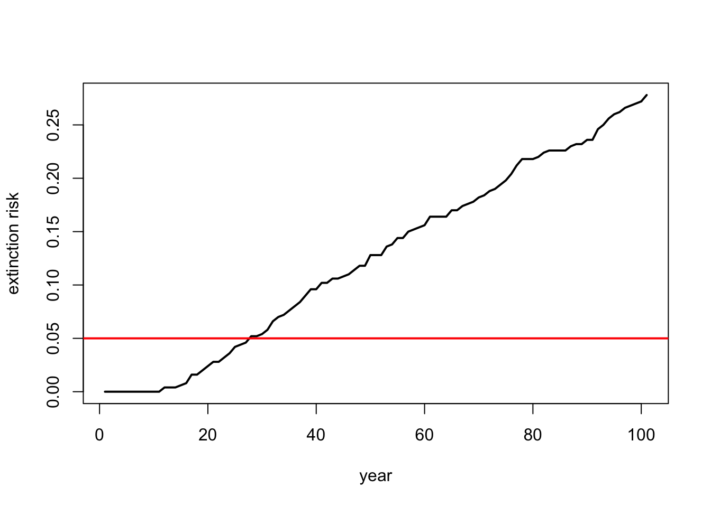
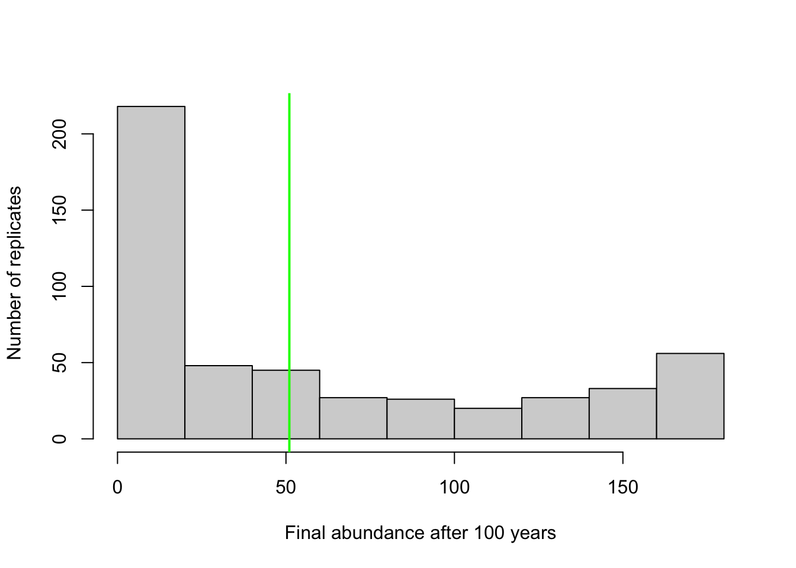
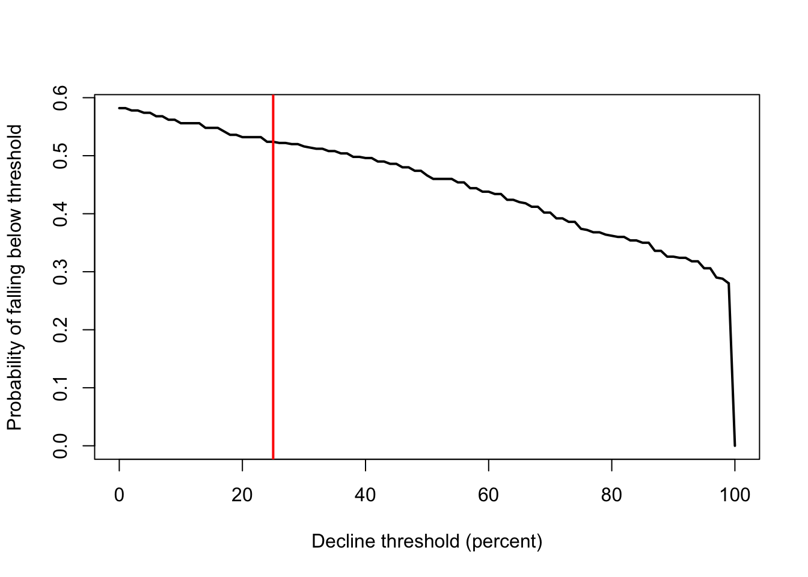
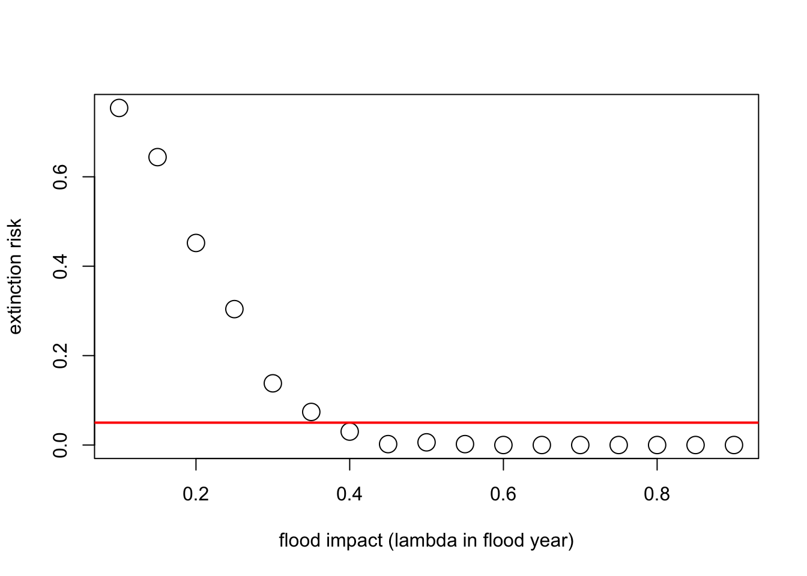

Análisis de viabilidad poblacional: Population Viability Analysis
BIOL4558
Agosto 2021
Final projects:
Un aviso sobre final projects. ¡Su PVA de trabajo y un documento que justifica sus decisiones de modelado se vencio!
En la próxima clase o hora de consulta favor llegar con su plan de trabajo.
lunes 8:30 a 10:30 martes 8:30 a 10:30
Análisis de viabilidad poblacional (PVA)
Análisis de viabilidad poblacional: Population Viability Analysis (PVA) integra todo lo que hemos estudiado hasta ahora y más.
En su nivel más básico, PVA es el proceso de construcción y ejecución de un modelo poblacional predictivo formal con el fin de obtener información sobre el estado de conservación presente y futuro, o clasificar opciones de gestión alternativas.
P: ¿El PVA se alinea bien con el paradigma de población pequeña?
P: ¿El PVA se alinea bien con el paradigma de la población en declive?
P: ¿Los modelos PVA son siempre estocásticos?
P: ¿Los modelos PVA siempre dependen de la densidad?
P: ¿Los modelos PVA siempre están estructurados por edades?
P : ¿Los modelos PVA son siempre espacialmente explícitos?
El proceso PVA (¡receta para PVA!)

NOTA: El proceso de construcción de un modelo PVA es iterativo y no lineal .
Por ejemplo, después de ejecutar su modelo (paso 4) y observar los resultados (paso 5), es posible que se dé cuenta de que el modelo es totalmente irreal. Esto podría pedirle que retroceda y cambie su modelo conceptual de la historia de vida (paso 1) y vuelva a parametrizar su modelo (paso 2).
Paso 1: historia de vida
Clase 1: pensamiento sistémico
Clase 2: retroalimentación
Clase 3: crecimiento exponencial
Clase 4: dependencia de la densidad
Clase 5: efectos allee
Clase 6: poblaciones estructuradas por edad
Clase 7: modelos matriciales de población
Clase 8: estocasticidad
El primer paso es conceptualizar la historia de vida de su especie de interés. Aquí es donde puede armar un diagrama de historia de vida y pensar en las siguientes preguntas:
- ¿Cuántas etapas de la vida debo incluir?
- ¿Qué etapas de la vida son reproductivas?
- ¿Qué tasas vitales dependen de la densidad?
- ¿Su especie se beneficia de la agregación social? Si es así, ¿hay algún efecto de Allee?
- ¿Qué tasas vitales están sujetas a estocasticidad ambiental?
- ¿Qué índices vitales podrían verse alterados por las actividades de manejo?
- ¿Existen catástrofes importantes que puedan afectar al sistema?
P : ¿hay algún caso en el que NO incluyas la estocasticidad demográfica en tu modelo?
Paso 2: ¡Parametrizar el modelo demográfico!
Clase 3: crecimiento exponencial
Clase 4: dependencia de la densidad
Clase 5: efecto allee
Clase 7: modelos matriciales de población
Clase 8: estocasticidad e incertidumbre
Aquí es donde se adjuntan números reales a las existencias y flujos en su diagrama de historia de vida conceptual. Recuerde que estos parámetros son más que solo supervivencia y fecundidad. Es también:
- Variación anual de supervivencia y fecundidad (estocasticidad ambiental)
- Abundancias iniciales
- Funciones y parámetros de dependencia de la densidad (incluido K)
- Allee umbrales
- Tamaños y probabilidades del efecto de catástrofe
- Efectos de las acciones de gestión
- Y más…
Paso 3: ¡Estructura espacial!
- Clase 13: modelos de metapoblación
- Clase 14: dinámica fuente-sumidero
Si desea hacer preguntas espaciales, su modelo debe ser espacialmente explícito, o al menos considerar la estructura espacial de alguna manera. Los tipos de preguntas en las que podría pensar incluyen:
- ¿Cuántas poblaciones discretas hay en su metapoblación?
- ¿Las diferentes poblaciones tienen diferentes tasas vitales medias? ¿Es probable que algunas poblaciones sean fuentes y otras, sumideros?
- ¿La estocasticidad ambiental ** está espacialmente correlacionada **? (¿Es probable que un mal año en una subpoblación sea un mal año en todas las subpoblaciones?)
- ¿A qué ritmo se mueven los individuos entre estas poblaciones?
- ¿Se puede mejorar la conectividad mediante la gestión?
- ¿Las tasas de dispersión dependen de la densidad?
Paso 4: ¡Simular!
En los ejercicios de clase, todos los laboratorios
Ya sabe cómo simular poblaciones; puede elegir si tiene sentido utilizar R, InsightMaker, Vortex (no se enseño este año) o algún otro software o plataforma de programación para sus simulaciones.
De cualquier manera, puede ser creativo: configure las simulaciones para que puedan ayudarlo a responder sus preguntas clave de investigación. Usted tiene el control: ¡puede configurar las simulaciones para que le brinden los tipos de datos que necesita!
- ¿Qué escenarios quieres probar?
- ¿Cuántas réplicas son suficientes?
- ¿Qué datos necesita almacenar para sus gráficos y análisis?
Paso 5: Resultados
Recomiendo usar R para analizar y trazar los resultados de su simulación. ¡PERO también puede usar Excel e InsightMaker para hacer gráficos perfectamente buenos!
Por último, debe comprender todas las simulaciones que acaba de ejecutar.
Hay dos tipos de herramientas de análisis de datos que necesitará para poder utilizar los resultados de la simulación para responder a sus preguntas: visualización gráfica y análisis estadístico .
Estas herramientas (visualización y análisis estadístico) son diversas y no existe una forma única de visualizar y analizar los resultados de la simulación. ¡¡Realmente depende de tu pregunta !!
Le daré algunas ideas aquí sobre las representaciones gráficas en el PVA de demostración, pero recuerde que no está limitado a estas ideas, ¡sea creativo! Dado que esta clase no es una clase de estadísticas, no necesariamente espero que haga estadísticas sofisticadas como parte de su proyecto, pero sus asistentes técnicos y yo podemos trabajar con sus grupos individualmente para descubrir algunas estadísticas simples que tengan sentido para su proyecto.
Un PVA de demostración simple
Para ilustrar algunos de estos conceptos, construyamos un modelo PVA muy simple en R. Si desea seguir adelante, haga clic [aquí] (LECTURA12.R)
Usamos R debido a sus herramientas de visualización flexibles y poderosas.
Paso 1: conceptualiza la historia de vida
Para simplificar, ignoremos la estructura de edades por ahora: ¡esto es solo un modelo de población estocástico simple de una etapa (escalar)!
¡También ignoremos la incertidumbre de los parámetros!
Paso 2: parametrizar!
Aquí está la parametrización básica del modelo:
#install.packages(c('tinytex', dependencies=T))
##############
# Demostración PVA
##############
# PASO 1: conceptualice la historia de vida (estamos modelando esta población como un modelo estocástico simple de una etapa con dependencia de la densidad)
# PASO 2: parametrizar el modelo
####
# Parámetros básicos de la historia de vida
####
R_max <- 1.15 # Tasa máxima de crecimiento
Init_N <- 51 # Abundancia inicial
K <- 175 # CCapacidad de carga
####
# Estocasticidad ambiental
####
SD_anngrowth <- 0.11 # desviación estándar de la tasa de crecimiento anual
####
# Densidad-dependencia (modelo de Ricker)
####
Ricker <- function(prev_abund){ # esta es una función para calcular la abundancia del próximo año - incluye estocasticidad env
prev_abund * exp(log(rnorm(1,R_max,SD_anngrowth))*(1-(prev_abund/K)))
}
####
# Catástrofe
####
Flood_prob <- 0.05 # 5% probabilidad de una gran inundación
Flood_lambda <- 0.25 # 25% de la población puede sobrevivir a una inundación#remotes::install_github('yihui/tinytex')Step 3: estructura espacial
Let’s ignore spatial structure! We will learn more about modeling spatial structure in the next two lectures! ¡Ignoremos la estructura espacial! ¡Aprenderemos más sobre el modelado de la estructura espacial en las próximas dos conferencias!
Step 4: ¡simular!
Ahora podemos usar estos parámetros para construir y ejecutar un modelo PVA simple:
# PASO 3: agregue estructura espacial (no se aplica aquí)
# PASO 4: ¡simular!
####
# Parámetros de simulación básicos
####
nyears <- 100 # número de años
nreps <- 500 # número de réplicas
PVAdemo <- function(nreps,nyears,Init_N,R_max,K,Flood_prob,Flood_lambda){
#browser()
PopArray2 <- array(0,dim=c((nyears+1),nreps)) # configurar matriz de almacenamiento
## empezar a recorrer las réplicas
for(rep in 1:nreps){
# establecer abundancia inicial
PopArray2[1,rep] <- Init_N # establecer la abundancia inicial
### recorrer años: loop through years
for(y in 2:(nyears+1)){
### estocasticidad y d-d
nextyear <- max(0,trunc(Ricker(PopArray2[y-1,rep])))
### catástrofe
if(runif(1)<Flood_prob) nextyear <- nextyear*Flood_lambda
PopArray2[y,rep] <- nextyear
}
}
return(PopArray2)
}
### Run the PVA!
Default <- PVAdemo(nreps,nyears,Init_N,R_max,K,Flood_prob,Flood_lambda)Step 5: resultados!
¡Ahora podemos realizar visualizaciones gráficas y estadísticas que responden a nuestras preguntas originales!
Visualización gráfica
Hay varios tipos de visualizaciones que quizás desee utilizar para sus modelos PVA:
El primero es mirar la “nube” de trayectorias de abundancia. Este es el mismo tipo de figura que hemos visto en InsightMaker usando la herramienta “Prueba de sensibilidad”.
# PASO 5: resultados
############
# Visualización gráfica
PlotCloud <- function(simdata){
plot(c(1:101),simdata[,1],col=gray(0.7),type="l",ylim=c(0,max(simdata)),xlab="Years",ylab="Abundance")
for(r in 2:ncol(simdata)){
lines(c(1:101),simdata[,r],col=gray(0.7),type="l")
}
}
PlotCloud(Default)
Bien, ¿qué aprendemos de esto? Realmente, es un desastre !!!
Si nuestra pregunta es sobre el riesgo de extinción, tal vez queramos trazar el riesgo de extinción por tiempo …
# Visualice las tasas de extinción a lo largo del tiempo
Extinction_byyear <- function(simdata){
apply(simdata,1,function(t) length(which(t==0)))/ncol(simdata)
}
plot(c(1:101),Extinction_byyear(Default),type="l",lwd=2,xlab="year",ylab="extinction risk")
abline(h=0.05,col="red",lwd=2)Quizás nuestra pregunta sea sobre la probabilidad de declive en 100 años …
En ese caso quizás deberíamos presentar un histograma de abundancias finales …
# visualizar la abundancia final después de 100 años en relación con la abundancia inicial
hist(Default[nrow(Default),],xlab="Final abundance after 100 years",ylab="Number of replicates",main="")
abline(v=Init_N,col="green",lwd=2)
O podríamos graficar el grado de disminución frente a la probabilidad de caer por debajo de ese umbral en el año 100.
# plot probabilities of different severities of declinegraficar las probabilidades de diferentes grados de declive
declines <- seq(0,100,by=1)
declineprob <- numeric(length(declines))
for(s in 1:length(declines)){
declineprob[s] <- length(which(Default[nrow(Default),]<(Init_N-(declines[s]/100)*Init_N)))/ncol(Default)
}
plot(declines,declineprob,type="l",lwd=2,xlab="Decline threshold (percent)",ylab="Probability of falling below threshold")
abline(v=25,col="red",lwd=2)
¿Y si nuestra pregunta es sobre el efecto de las inundaciones en el riesgo de extinción? Imaginemos que no se espera que la probabilidad de inundaciones cambie con el cambio climático, ¡pero es probable que la intensidad de los daños por inundaciones aumente sustancialmente!
Actualmente, las inundaciones generalmente resultan en una reducción de la población del 10%. Pero el cambio climático podría aumentar este número hasta en un 90%. ¡Veamos cuánto podría aumentar esto el riesgo de extinción!
# Grafique el riesgo de extinción en función de la gravedad de las inundaciones
Exctinction_risk <- function(simdata){
length(which(simdata[nrow(simdata),]==0))/ncol(simdata)
}
flood_lambdas <- seq(0.9,0.1,by=-0.05)
all_scenarios <- numeric(length(flood_lambdas))
for(scenario in 1:length(flood_lambdas)){
PVA <- PVAdemo(nreps,nyears,Init_N,R_max,K,Flood_prob,flood_lambdas[scenario])
all_scenarios[scenario] <- Exctinction_risk(PVA)
}
plot(flood_lambdas,all_scenarios,type="p",cex=2,xlab="flood impact (lambda in flood year)",ylab="extinction risk")
abline(h=0.05,col="red",lwd=2)